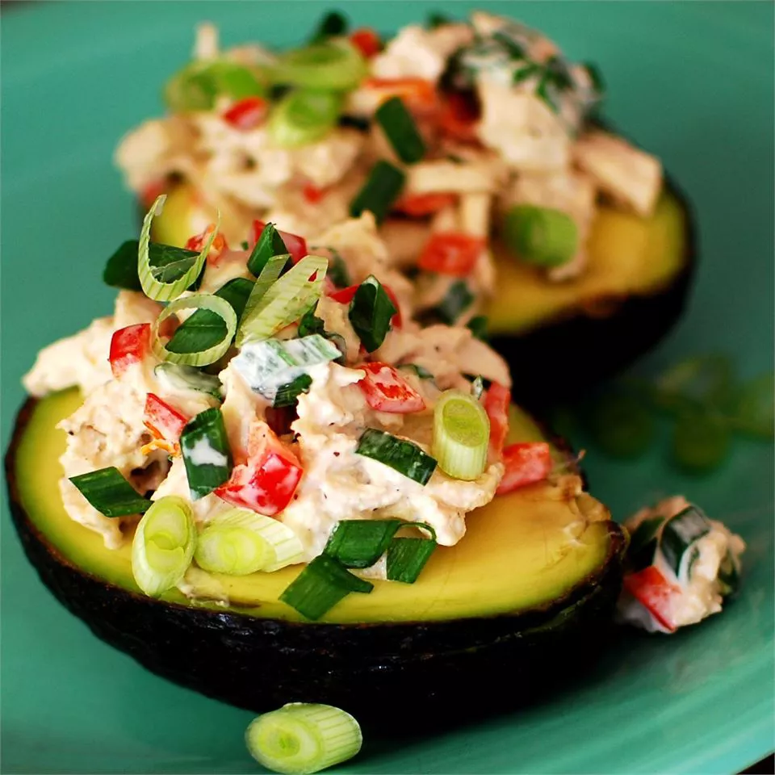

Avocado and Tuna Tapas

Description:
This tuna stuffed avocado is a light,
healthy dish that goes best with crisp white wines and crunchy bread.
This recipe is great for experimenting with a variety of different vegetables,
spices, and kinds of vinegar.
Ingredients:
- 1 (12 ounce) can solid white tuna packed in water, drained
- 1 tablespoon mayonnaise
- 3 green onions, thinly sliced, plus additional for garnish
- 1/2 red bell pepper, chopped
- 1 dash balsamic vinegar
- black pepper to taste
- 1 pinch garlic salt, or to taste
- 2 ripe avocados, halved and pitted
Cooking:
- Stir together tuna, mayonnaise, green onions, red pepper, and balsamic vinegar in a bowl.
- Season with pepper and garlic salt, then pack the avocado halves with the tuna mixture.
- Garnish with reserved green onions and a dash of black pepper before serving.